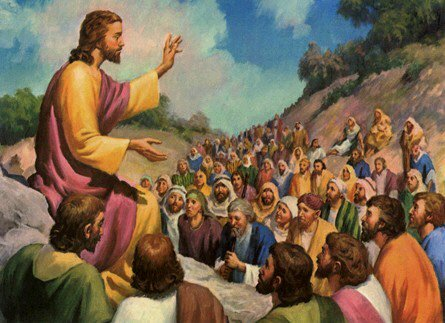
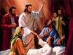

బిగినింగ్ వాజ్ ది వర్డ్

గ్రాండ్ ఎంట్రన్స్?
ప్రతి డిసెంబర్లో, మేము సంవత్సరంలో అతిపెద్ద వేడుకలను ఊహించడం ప్రారంభిస్తాము: క్రిస్మస్! అన్ని దుకాణాలు లైట్లు మరియు టిన్సెల్తో మెరుస్తూ ఉంటాయి (ఇంతకు ముందు మరియు ప్రతి సంవత్సరం, ఇది కనిపిస్తుంది), మేము మా ఇళ్ల చుట్టూ స్ట్రింగ్ లైట్లు మరియు చెట్టును అలంకరిస్తాము మరియు నగరాలు మరియు పట్టణాల వీధులు కూడా అనేక భవనాల చుట్టూ మెరుస్తున్న లైట్లతో ప్రకాశిస్తాయి. మరియు అన్నిటికంటే పెద్ద ఉత్సాహం? బహుకరిస్తుంది! మనం ఏమి పొందుతాము? మనం ఆశించింది అదే అవుతుందా? మేము డిసెంబర్ 25 కోసం వేచి ఉండలేము!

చాలా నిశ్శబ్ద ప్రవేశం
కాబట్టి, 2000 సంవత్సరాల క్రితం అలా జరిగిందా? ప్రజలు నిరీక్షణతో ఎదురు చూస్తున్నారా: యేసు జననం కోసం ఎదురుచూస్తూ వారి ఇళ్లన్నీ అలంకరించుకున్నారా? ఈ దీర్ఘకాలంగా ఎదురుచూస్తున్న జన్మను జరుపుకోవడానికి వారు ఒకరికొకరు బహుమతులు కొనుగోలు చేశారా? ఆయన పుట్టినప్పుడు, రక్షకుడు చివరికి వచ్చాడనే ప్రకటన ప్రపంచమంతటా వెలువడిందా?
దాదాపు.

డేవిడ్ నగరం అని కూడా పిలువబడే బెత్లెహెమ్లో యేసు జన్మించినప్పుడు (గుర్తుందా?), కొంతమందికి మాత్రమే దాని గురించి నిజంగా తెలుసు. యేసు తల్లి మరియ, ఆమెకు కాబోయే భర్త జోసెఫ్ ఉన్నారు. మేరీ మరియు జోసెఫ్ బస చేసిన సత్రం యొక్క లాయం యాజమాన్యంలోని వ్యక్తులు బహుశా ఆ స్త్రీకి జన్మనిచ్చిందని తెలిసి ఉండవచ్చు, కానీ వారికి ప్రత్యేక ప్రాముఖ్యత లేదు.
కానీ పరలోకంలో గొప్ప ఆనందం ఉంది, మనకు తెలుసు, ఎందుకంటే లూకా 2: 8-14 యేసు జన్మించిన రాత్రి కొంతమంది గొర్రెల కాపరులకు దేవదూతల పెద్ద సమూహం కనిపించిందని మాకు తెలుసు. వారు యేసు అనే మగబిడ్డ జన్మించాడని ప్రకటించడమే కాకుండా, యూదు ప్రజలు చాలా కాలంగా ఎదురుచూస్తున్న మెస్సీయ అతనే అని వారు ప్రకటించారు!
అయితే మరో ముప్పై ఏళ్లు ఆగితే మరెవరూ ఆ విషయాన్ని గుర్తించలేరు.
నలుగురు మనుషులు, నాలుగు కథలు

యేసు మరణం, పునరుత్థానం మరియు స్వర్గానికి ఆరోహణ తర్వాత సంవత్సరాలలో, నలుగురు వేర్వేరు వ్యక్తులు యేసు జీవితం గురించి వ్రాయడానికి ప్రేరేపించబడ్డారు. కొత్త నిబంధన యొక్క మొదటి నాలుగు పుస్తకాలు ఈ జీవిత చరిత్రలను వ్రాసిన వ్యక్తుల కోసం పేరు పెట్టబడ్డాయి (వాటిని సాధారణంగా సువార్తలు అంటారు): మాథ్యూ, మార్క్, లూకా మరియు జాన్.
వారు ఒకరితో ఒకరు చర్చించుకోలేదు; యేసు కథను మరెవరూ రాస్తున్నారని కూడా వారికి తెలియకపోవచ్చు. మాథ్యూ, లూకా మరియు జాన్ దాదాపుగా మార్క్ సువార్తను చదివారు; పండితులు ఇది వ్రాయబడిన మొదటి యేసు జీవిత చరిత్ర అని నమ్ముతారు. కానీ నాలుగు సువార్తలు ఒకదానికొకటి స్వతంత్రంగా వ్రాయబడ్డాయి.

ఒక వ్యక్తి ఒక సంఘటన గురించి కథను చెప్పినప్పుడు, అతను లేదా ఆమె సాధారణంగా వారి అభిప్రాయం ప్రకారం, అత్యంత ముఖ్యమైన భాగాలను చేర్చడానికి ప్రయత్నిస్తారు. మాథ్యూ, మార్క్, లూకా మరియు జాన్ విషయంలో ఇదే జరిగింది. కొన్ని ఇతరులు చేయని సంఘటనలను కలిగి ఉంటాయి; కొందరు సంఘటనలను కొద్దిగా భిన్నమైన క్రమంలో చెబుతారు.
ఉదాహరణకు, మాథ్యూ మరియు లూకా మాత్రమే యేసు పుట్టిన కథను చెప్పారు. బహుశా, లూకా మనస్సులో, యేసు కన్యక అమ్మాయికి జన్మించాడని ప్రజలు తెలుసుకోవడం చాలా ముఖ్యం. మేరీ కాబోయే భర్త, జోసెఫ్, యేసు తండ్రి కాదు; యేసు దేవుని కుమారుడు. (లూకా 1:26-38)
మాథ్యూ సువార్త యేసు కుటుంబ వృక్షంతో ప్రారంభమవుతుంది. చాలా కాలం క్రితం, దేవుడు అబ్రాహాముకు అతని సంతతి నుండి వచ్చే రాజు ద్వారా ప్రపంచం ఆశీర్వదించబడుతుందని ఎలా వాగ్దానం చేసాడో మీకు గుర్తుందా (ఆదికాండము 12:3)? యేసు అబ్రహాము యొక్క ప్రత్యక్ష వంశస్థుడైన డేవిడ్ రాజు యొక్క ప్రత్యక్ష వంశస్థుడని మనకు చూపించడానికి మాథ్యూ జాగ్రత్త తీసుకుంటాడు. యేసు ఆ ప్రాచీన ప్రవచన నెరవేర్పు.
మార్క్ మరియు యోహానుల విషయానికొస్తే, వారు యేసు గురించి వ్రాసేటప్పుడు, వారు ఎవరి గురించి మాట్లాడుతున్నారో అందరికీ తెలిసే ఉంటుంది: ఆయన భూమిపై ఉన్న రోజుల్లో, యేసు చాలా చాలా ప్రసిద్ధి చెందాడు. కాబట్టి, మార్క్ మరియు జాన్ యేసు తన భూసంబంధమైన పరిచర్యను ప్రారంభించిన సమయంలో, అంటే యేసుకు ముప్పై సంవత్సరాల వయస్సులో ఉన్నప్పుడు వారి కథలను ప్రారంభిస్తారు.
ఊహించని మెస్సీయ

ఇశ్రాయేలు అష్షూరు మరియు బాబిలోన్పై పడుతుందని ప్రవచించిన ప్రవక్తల గురించి మనం తెలుసుకున్నప్పుడు, అదే ప్రవక్తలు డేవిడ్ రాజు వంశం నుండి ఒక రాజు, మెస్సీయ, రక్షకుడు వస్తారని అంచనా వేస్తున్నారని మేము తెలుసుకున్నాము. ఈ ప్రవచనాలు యూదులకు ఇజ్రాయెల్ మళ్లీ గొప్ప దేశంగా మారుతుందని, ఇజ్రాయెల్ శత్రువులందరినీ జయించడానికి ఒక రాజు వస్తాడని మరియు ప్రపంచాన్ని పరిపాలించే సూపర్-పవర్గా మారుస్తాడని ఆశించారు.
కానీ యూదులు అన్ని ప్రవచనాలను చదవడం లేదు; లేదా, వారు ఉంటే, వారు వాటిని చాలా తప్పుగా అర్థం చేసుకున్నారు. దేవుడు పంపబోయే మెస్సీయ గురించి ప్రవక్తలు రెండు వివరణలు ఇచ్చారు. ఒకటి, నిజానికి, ఒక శక్తివంతమైన పాలకుడు. యూదులకు అర్థం కాని విషయం ఏమిటంటే, ఈ రాజు చాలా అసాధారణమైన ప్రదేశం నుండి వస్తాడని మరియు అతను గొప్ప ఆర్భాటాలతో వస్తాడని (అస్పష్టమైన చిన్న బెత్లెహేంలో నిశ్శబ్ద రాత్రి గుర్తుందా?). ఈ కొత్త రాజు భూమిపై దుఃఖం, దుఃఖం మరియు బాధలను తెలిసిన వ్యక్తిగా ఉంటాడు, రాజ వైభవం మరియు అధికారం కాదు.
ఓడిపోయిన, నిరుత్సాహపడిన ప్రజలుగా, యూదులు యేసు వంటి వినయపూర్వకమైన మెస్సీయ కోసం వెతకలేదు; వారు దాని కంటే చాలా అద్భుతమైన వ్యక్తి కోసం వెతుకుతున్నారు.
కాబట్టి, యేసు వచ్చి వారి మధ్య నివసించినప్పుడు, వారు ఆయనను చూసినప్పుడు మెస్సీయను గుర్తించలేదు.

యేసు బోధన
యేసు మరొక దేశం యొక్క పాలనలో ఉన్న ప్రదేశంలో పెరిగాడని గుర్తుంచుకోండి: ఈ సమయానికి, అది శక్తివంతమైన రోమన్ సామ్రాజ్యం. యేసు చాలా సాధారణ సమాజంలో పెరిగాడు; యూదు ప్రజలు చాలా భక్తిపరులు, మరియు అతని పొరుగువారు రైతులు లేదా మత్స్యకారులు లేదా వ్యాపారులు (జోసెఫ్, అతని తల్లి భర్త, వ్యాపారంలో వడ్రంగి).
బహుశా దీని కారణంగా, యేసు తన సమాజంలోని ప్రజలకు సుపరిచితమైన మరియు అర్థం చేసుకునే విషయాలను తరచుగా ఇమిడి ఉండే ఉపమానాలు అని పిలువబడే కథలు చెప్పడం ద్వారా ఆధ్యాత్మిక సత్యాలను బోధించడానికి ప్రయత్నించాడు:

- ఒక రైతు తన పొలంలో విత్తనం విత్తాడు (మత్తయి 13:2-23)
- తన తల్లిదండ్రులకు వ్యతిరేకంగా తిరుగుబాటు చేసిన కుమారుడు, కానీ తన పాపాలకు చాలా పశ్చాత్తాపంతో వారి వద్దకు తిరిగి వస్తాడు (లూకా 15:11-32)
- తన గొర్రెలలో ఒకదానిని పోగొట్టుకున్న కాపరి (మత్తయి 18:10-14)

పరిసయ్యులు
యేసు కాలంలో, పూజారులు (బైబిల్ వారిని పరిసయ్యులు అని కూడా పిలుస్తుంది - ఈ పదానికి "వేరుగా ఉన్నవారు" అని అర్ధం) యూదుల రోజువారీ జీవితాలను పాలించారు. పూజారులు ఇజ్రాయెల్ యొక్క పన్నెండు గోత్రాలలో ఒకదాని నుండి వచ్చారు, ఆ పాత్ర కోసం దేవుడు ప్రత్యేకంగా ఎంచుకున్నాడు: లేవీయులు (లేవీ తెగ నుండి). గతంలో మాదిరిగానే యూదు ప్రజలను దారితప్పిపోకుండా చేయడమే తమ పనిగా భావించారు. ప్రజల కోసం బైబిల్ చదవడం మరియు అర్థం చేసుకోవడం వారి పని అని వారు భావించారు. (మనం ఇంతకు ముందు చెప్పిన విషయాన్ని గుర్తుంచుకోండి దేవుడు అందరి కోసం బైబిల్ని ఉద్దేశించాడా?)
యేసు లేవీ గోత్రానికి చెందినవాడు కాదు, కాబట్టి యేసు పూజారి కాదు.

రబ్బీగా లేదా బైబిల్ సత్యాలు మరియు జ్ఞానాన్ని బోధించే వ్యక్తిగా ఉండాలంటే, ఒక వ్యక్తి ప్రత్యేక రబ్బీ స్కూల్లో సుదీర్ఘ శిక్షణ పొందవలసి ఉంటుంది.
యేసు రబ్బీల పాఠశాలకు వెళ్లలేదు, కాబట్టి పరిసయ్యులు ఆయనను ఉపాధ్యాయునిగా "అర్హత"గా పరిగణించలేదు.
కాబట్టి, దాదాపు తన పరిచర్య ప్రారంభం నుండి, యేసు మతపరమైన పాలకులతో విభేదించాడు. అయినప్పటికీ, యేసు బోధ వినడానికి ప్రజలు గుమిగూడారు. ది సెర్మన్ ఆన్ ది మౌంట్ అని పిలువబడే అతని అత్యంత ప్రసిద్ధ బోధలలో ఒకదానిలో (ఇది మాథ్యూ 5 మరియు లూకా 6 రెండింటిలోనూ చూడవచ్చు), వాస్తవంగా అతను చెప్పిన ప్రతి అంశం పరిసయ్యులు ప్రజలు నమ్మే దానికి విరుద్ధంగా ఉంది.
తన అనుచరులు నేర్చుకోవాలని యేసు కోరుకున్న కొన్ని ప్రధాన ఆలోచనలు:
- దేవుడు ప్రజలను ప్రేమిస్తాడు మరియు వారు తనను తిరిగి ప్రేమించాలని కోరుకుంటాడు. దేవునిపట్ల ప్రేమను చూపించే మార్గాలలో ఒకటి, కేవలం ధర్మశాస్త్రంలోని లేఖనానికి విధేయత చూపడమే కాదు, ధర్మశాస్త్ర స్ఫూర్తికి కూడా విధేయత చూపడం. కాబట్టి, నిజాయితీగా ఉండటమే కాకుండా, యేసు తన అనుచరులకు దయతో, దయతో మరియు న్యాయంగా ఉండమని చెప్పాడు.
- యేసు తన అనుచరులు వారి ప్రేమ ద్వారా గుర్తించబడాలని కోరుకుంటున్నాడు: వారి తోటి విశ్వాసుల పట్ల ప్రేమ, వారి శత్రువుల పట్ల కూడా ప్రేమ. నమ్మిన వారి పాపాలను క్షమిస్తానని దేవుడు వాగ్దానం చేశాడు; మనం ఒకరినొకరు క్షమించుకోవాలని ఆయన కోరుకుంటున్నాడు.
యేసు తన అనుచరులు తెలుసుకోవాలనుకున్న అతి ముఖ్యమైన విషయం ఏమిటంటే, అతను, యేసు, దేవుని కుమారుడని మరియు పాపం నుండి మోక్షం ఆయన ద్వారా మాత్రమే వస్తుంది. బైబిల్లోని అత్యంత ప్రసిద్ధ వచనాలలో ఒకటి దేవుడు మానవజాతితో చేసిన కొత్త ఒడంబడికను ప్రకటిస్తుంది, జాన్ 3:16:
దేవుడు ప్రపంచాన్ని ఎంతగానో ప్రేమించాడు, అతను తన ఏకైక కుమారుడిని ఇచ్చాడు, తద్వారా ఆయనను విశ్వసించే ప్రతి ఒక్కరూ నశించకూడదు, కానీ నిత్యజీవం పొందాలి.
యేసు నుండి వచ్చిన ఈ ప్రకటన రెండు కారణాల వల్ల విప్లవాత్మకమైనది: మొదటిది, యేసు దేవుని కుమారుడనే ఆలోచన చాలా మంది యూదులకు ఆమోదయోగ్యం కాదు. కేవలం మనిషి దేవుడు ఎలా అవుతాడు? యేసు కాలంలోని మత పెద్దలు అంగీకరించలేని రెండవ ఆలోచన ఏమిటంటే, రక్షణ ఇకపై యూదులకు మాత్రమే కేటాయించబడదు. తనను విశ్వసించే ఎవరైనా దేవుని రాజ్యానికి చెందుతారని యేసు చెప్పాడు (యోహాను 1:12).
సద్దుసీలు
సద్దూకయ్యులు, ఒక ప్రముఖ, తరచుగా సంపన్నులు, యేసు కాలంలో నివసించిన యూదుల సమూహం, రోమన్లతో ఒక విధమైన రాజకీయ ఏర్పాటును కలిగి ఉన్నారు, తద్వారా వారు కొంత రాజకీయ అధికారాన్ని అనుభవించారు. సద్దూసీలు కొన్నిసార్లు తమ తోటి యూదుల నుండి రోమన్ పన్నులను వసూలు చేసే పనిని చేపట్టారు, మరియు తరచుగా దాని గురించి నిజాయితీ లేకుండా ఉంటారు, ప్రజలు తమ వాటాను తాము ఉంచుకోగలిగేలా వాస్తవానికి చెల్లించాల్సిన దానికంటే ఎక్కువ చెల్లించవలసి ఉంటుంది. అసహ్యించుకున్న రోమన్లతో సన్నిహిత సంబంధాల కారణంగా సద్దూసీలు చాలా మంది యూదులచే ద్రోహులుగా పరిగణించబడ్డారు.
యూదుల మధ్య తిరుగుబాటు గురించి తరచుగా మాట్లాడేవారు; వారు రోమన్ పాలన యొక్క కఠినత్వానికి లోనయ్యారు. సద్దూకయ్యులు యూదులు మరియు రోమన్ల మధ్య శాంతిని కాపాడటం తమ పనిగా భావించారు. యూదులు రోమన్లను ఎంత తక్కువ ఇబ్బందులకు గురిచేస్తే, అది అందరికీ సులభమవుతుందని సద్దూకయ్యులు భావించారు.

యేసుతో సమస్య
మనం ఇంతకు ముందు చూసినట్లుగా, యేసు ప్రజల గుంపులకు బోధిస్తూ దేవుని గురించి మరియు ఆయన ప్రేమ గురించి అందరికీ సువార్తను వ్యాప్తి చేశాడు. పరిసయ్యులకు ఇది అస్సలు నచ్చలేదు; వారు యూదులలో ఏకైక మతపరమైన అధికారం కావాలని కోరుకున్నారు. యాజకులు చేసిన దానికంటే ఆధ్యాత్మిక విషయాల గురించి మరింత లోతుగా ఆలోచించమని యేసు ప్రజలకు బోధించాడు మరియు దాని కోసం వారు ఆయనను ప్రేమించారు.
యేసు ఆకర్షిస్తున్న పెద్ద సమూహాలను కూడా సద్దూకయ్యులు ఇష్టపడలేదు. ప్రజల గుంపును సులభంగా నియంత్రించలేకపోయారు. రోమ్పై తిరుగుబాటులో తన చుట్టూ ఉన్న జనసమూహం తనను అనుసరించాలని యేసు కోరుకుంటే, దానిని నిరోధించడానికి వారు ఏమి చేయగలరు?
రోమన్ సైన్యం యొక్క శక్తికి పెద్ద సంఖ్యలో యూదులు కూడా సరిపోరని సద్దూకయ్యులకు తెలుసు. రోమన్లు యూదుల తిరుగుబాటును అణచివేయవలసి వస్తే, వారు వారిని పూర్తిగా అణిచివేస్తారు (మరియు సుమారు 35 సంవత్సరాలు యేసు భూసంబంధమైన జీవితం తరువాత, వారు సరిగ్గా అదే చేసారు). వారి రాజకీయ శక్తి ఇకపై రోమన్లతో ఏమీ అర్థం కాదు, మరియు సద్దూకయ్యులు యేసు వంటి అల్లరిమూక ఎవ్వరూ తమ శక్తిని కోల్పోరు!
అయితే, యేసు చేసిన అత్యంత నీచమైన పని ఏమిటంటే, అతను నిజానికి దేవుని కుమారుడని ప్రజలకు ప్రకటించడం. వారు చాలా కాలంగా ఎదురుచూస్తున్న మెస్సీయ తానేనని యేసు వారికి చెప్పాడు. పరిసయ్యులకు, ఇది దైవదూషణ (దేవుని పట్ల అత్యంత అగౌరవం)! యూదుల చట్టం ప్రకారం, ఇది మరణశిక్ష విధించదగిన నేరం.
మెస్సీయ అని తన వాదనకు మద్దతు ఇవ్వడానికి యేసు మళ్లీ మళ్లీ సంకేతాలు మరియు అద్భుతాలు చేశాడు: అతను రోగులను స్వస్థపరిచాడు, గ్రుడ్డివారికి చూపు ఇచ్చాడు మరియు కుంటివారిని తిరిగి నడిచేలా చేశాడు. అతను మృతులలో నుండి ఒక మనిషిని కూడా లేపాడు!
యేసు పరిసయ్యులకు (ప్రజలు వారి అధికారాన్ని అనుమానించేలా చేస్తున్నాడు కాబట్టి) మరియు సద్దూకయ్యులకు (అతను వారి శక్తికి ముప్పుగా ఉండవచ్చు) ఇద్దరికీ ముప్పుగా భావించబడ్డాడు.
పరిసయ్యులు మరియు సద్దూకయ్యులు సాధారణంగా ఒకరితో ఒకరు స్నేహంగా లేదా సహకరించుకునేవారు కాదు, కానీ ఇప్పుడు వారికి ఉమ్మడి శత్రువు ఉన్నారు: యేసు.

ఒక రాత్రి, యేసు ప్రార్థిస్తున్నప్పుడు, యేసుకు అత్యంత సన్నిహిత మిత్రులలో (అతని పన్నెండు మంది శిష్యులు) ఉన్న జుడాస్ ఇస్కారియోట్ అనే వ్యక్తి, పరిసయ్యులు మరియు సద్దూకయ్యుల సమూహాన్ని నడిపించాడు, అతను గెత్సేమనే తోటలో ప్రార్థన చేయడానికి ఇష్టపడుతున్నాడని అతనికి తెలుసు. యేసు తాను ఏ నేరం చేయలేదని తెలిసినప్పటికీ, అరెస్టు చేయడాన్ని అడ్డుకోలేదు.
యేసుపై నిందలు వేసినవారు రహస్య విచారణ జరిపేందుకు ఆయనను ఆలయ ప్రధాన యాజకుడైన కయఫా దగ్గరకు తీసుకెళ్లారు. మెస్సీయ అని చెప్పుకోవడం వల్ల యేసు దైవదూషణకు పాల్పడ్డాడని వారు కయఫాతో చెప్పారు.

ఆయన ప్రధాన యాజకుని ముందు నిలుచున్నప్పుడు, "నేను మెస్సీయను, నేను దేవుని కుడిపార్శ్వమున కూర్చుండుట మీరు చూస్తారు" అని యేసు చెప్పాడు. (మార్కు 14:62)
యేసుకు వ్యతిరేకంగా "సాక్ష్యం" ఇవ్వడానికి తప్పుడు సాక్షులు సేకరించబడినప్పటికీ, కైఫా యేసు యొక్క ప్రకటన మాత్రమే నేరాన్ని అంగీకరించినట్లు నిర్ణయించుకున్నాడు. యేసుకు మరణశిక్ష విధించాలని అతని తీర్పు.
రోమన్ గవర్నర్ పొంటియస్ పిలాతు అనుమతి లేకుండా యూదులు మరణశిక్షను అమలు చేయలేరు. పూజారులు యేసును పిలాతు ముందుకి తీసుకువచ్చి, యేసు రాజద్రోహానికి పాల్పడ్డాడని చెప్పారు: అతను మెస్సీయ అని చెప్పినట్లయితే, అతను యూదుల రాజు అని చెప్పడానికి సమానమని వారు చెప్పారు. రోమన్ చట్టం ప్రకారం, సీజర్ తప్ప ఎవరూ తనను తాను రాజు అని పిలవలేరు.
పిలాతు నిజంగా యేసు రాజుననే గంభీరమైన దావా చేస్తున్నాడని అనుకోలేదు, ఎందుకంటే అతను విచారించబడుతున్నప్పుడు అతను తన కోసం రక్షణ కూడా ఇవ్వలేదు. కానీ యూదా పూజారులు యేసును చంపాలని పట్టుబట్టారు. దోషిగా నిర్ధారించబడిన హంతకుడు బరబ్బాను విడుదల చేయమని లేదా యేసును విడుదల చేయాలని పిలాతు వారికి ఎంపిక చేసినప్పటికీ, ప్రజలందరూ యేసును చంపమని కేకలు వేశారు. (మార్కు 15:6-13)

యేసు చనిపోయి పునరుత్థానమయ్యాడు
శిలువ వేయడం అనేది రోమన్లు ఉపయోగించిన మరణశిక్ష యొక్క ఒక రూపం. చనిపోవడం అత్యంత అవమానకరమైన మార్గం. జీసస్ సాధారణంగా కళలో నడుము వస్త్రాన్ని ధరించినట్లు చిత్రీకరించబడినప్పటికీ, అతను నిజానికి అతని దుస్తులు తీసివేయబడ్డాడు, తద్వారా అతను అందరికీ కనిపించేలా నగ్నంగా ఉన్నాడు. ఇది చాలా అవమానకరమైనది ఎందుకంటే సిలువ వేయడం రోమన్లు చెత్త రకాల నేరస్థుల కోసం కేటాయించబడింది.
ఒక రాత్రి కొట్టబడిన తరువాత, మొదట అతని యూదుల నిందితులచే మరియు తరువాత రోమన్ గార్డులచే కొట్టబడిన తరువాత, యేసు సిలువ వేయబడే ప్రదేశానికి తన స్వంత శిలువను మోయవలసి వచ్చింది. అతను తన దెబ్బలన్నిటి నుండి చాలా బలహీనంగా ఉన్నాడు, అతను సిలువ బరువును భరించలేడు; వారు దారిలో వెళ్ళిన ఒక దాసుడు అతని కొరకు యేసు యొక్క సిలువను మోయడానికి చేయబడ్డాడు.
వారు శిలువ వేయబడిన స్థలానికి చేరుకున్నప్పుడు, రోమన్ గార్డ్లు యేసు చేతులను సిలువకు వ్రేలాడదీయారు. అప్పుడు వారు అతని నుండి తీసుకున్న దుస్తుల కోసం జూదం ఆడారు.
సిలువపై చనిపోవడానికి సాధారణంగా చాలా రోజులు తీవ్రమైన బాధలు పడాల్సి వచ్చినప్పటికీ, యేసు గాయాలు మరియు ముందు రాత్రి నుండి రక్తాన్ని కోల్పోవడం బహుశా ఆయన మరణాన్ని వేగవంతం చేసింది. అతను సిలువకు వ్రేలాడదీయబడిన అదే రోజు మరణించాడు.

గెత్సేమనే తోటలో బంధించబడినప్పుడు యేసు స్నేహితులు చాలా మంది ఆయనను విడిచిపెట్టగా, అరిమతీయాకు చెందిన జోసెఫ్ అనే వ్యక్తి పిలాతు వద్దకు వెళ్లి, యేసు మృతదేహాన్ని సరిగ్గా ఉంచడానికి అడిగాడు.
అతను యేసు శరీరాన్ని నారతో చుట్టి, రాతితో చెక్కబడిన సమాధిలో ఉంచాడు. అప్పుడు అతను ప్రవేశ ద్వారం మీద ఒక పెద్ద రాయిని దొర్లించి తన మార్గంలో వెళ్ళాడు.
మానవజాతి పాపాలకు అంతిమ బలిగా చనిపోవాల్సి ఉంటుందని యేసు తన శిష్యులకు చాలాసార్లు చెప్పడానికి ప్రయత్నించాడు, కానీ వారు ఆయనను అర్థం చేసుకోలేదు. యేసు దేవుని కుమారుడైతే, దేవుడు వాగ్దానం చేసిన మెస్సీయ అయితే, ఆయన ఎప్పటికీ ఎలా చనిపోతారని వారు వాదించారు.
యేసు చనిపోయిన మూడవ రోజున, ఆయన స్నేహితులుగా ఉన్న కొందరు స్త్రీలు ఆయన సమాధికి వెళ్లారు. మరణించిన వ్యక్తి శరీరానికి కొన్ని ప్రత్యేక సుగంధ ద్రవ్యాలతో అభిషేకం చేయడం యూదుల ఆచారం. అలా వెళుతుండగా, సమాధి ముందు దొర్లిన రాయిని ఎలా కదిలిస్తారో అని తమలో తాము ఆలోచించుకున్నారు.

స్త్రీలు వచ్చినప్పుడు, అప్పటికే రాయి దొర్లిందని, సమాధి ఖాళీగా ఉందని చూసి ఆశ్చర్యపోయారు!
యేసు మృతదేహం ఉన్న చోట కూర్చున్న ఒక దేవదూత, "భయపడకండి! యేసు తాను చెప్పినట్లు మృతులలో నుండి లేచాడు!" దేవదూత స్త్రీలను వారి స్నేహితుల వద్దకు తిరిగి వచ్చి యేసు మృతులలోనుండి లేచిన గొప్ప వార్తను వారికి తెలియజేయమని చెప్పాడు. (మార్కు 16:6-7)
ఈజిప్టులో బానిసత్వం నుండి విడుదలైన వారి జ్ఞాపకార్థం యూదులు ప్రతి సంవత్సరం పాస్ ఓవర్ జరుపుకుంటారు, క్రైస్తవులు ఈస్టర్ ఆదివారంను చరిత్రలో అత్యంత అద్భుతమైన సంఘటనగా జరుపుకుంటారు: యేసు మృతులలో నుండి లేచాడు, మానవజాతిపై మరణం యొక్క శక్తిని జయించడం మరియు మన పాపాలను ఎల్లకాలం క్షమించడం!
సహజంగానే, యేసు సమాధిలో లేడని యేసు స్నేహితులు విన్నప్పుడు నమ్మలేకపోయారు.
కానీ యేసు తన పునరుత్థానం తర్వాత పదకొండు మంది శిష్యులకు చాలాసార్లు కనిపించాడు. అతను చాలా ప్రవచనాల నెరవేర్పు గురించి వారితో మాట్లాడటానికి చాలా సమయం గడిపాడు మరియు చివరికి యేసు తన సిలువ వేయడానికి ముందు వారికి బోధించడానికి ప్రయత్నించిన అన్ని సత్యాలకు వారి కళ్ళు తెరవబడ్డాయి. (లూకా 24:27)

యేసు స్వర్గానికి అధిరోహించాడు
యేసు తన పునరుత్థానం తర్వాత నలభై రోజుల వ్యవధిలో శిష్యులకు కనిపించడం కొనసాగించాడు. ఒకసారి, అతను వారితో భోజనం చేస్తున్నప్పుడు, వారికి వాగ్దానం చేయబడిన పరిశుద్ధాత్మ బహుమతిని పొందే వరకు యెరూషలేమును విడిచిపెట్టవద్దని చెప్పాడు. (యోహాను 14:16)
యేసు వారికి కనిపించిన చివరి సందర్భంలో, శిష్యులు ఆయనను ఇప్పుడు ఇశ్రాయేలును దాని పూర్వ వైభవానికి పునరుద్ధరించబోతున్నారా అని అడిగారు. అలాంటి ప్రశ్నకు సమాధానం తండ్రి అయిన దేవుడు మాత్రమే తెలుసుకోవాలి అని యేసు జవాబిచ్చాడు. (చట్టాలు 1:7)
మరియు వారందరూ అతనితో అక్కడ నిలబడి ఉండగా, యేసు వారి నుండి పైకి లేవడం ప్రారంభించాడు. శిష్యులు యేసును ఇక చూడలేనంత వరకు చూశారు. యేసు తన తండ్రితో ఉండడానికి పరలోకానికి ఎక్కాడు. కానీ కథ అక్కడితో ముగియలేదు. నిజానికి, ఇది ప్రారంభం మాత్రమే!